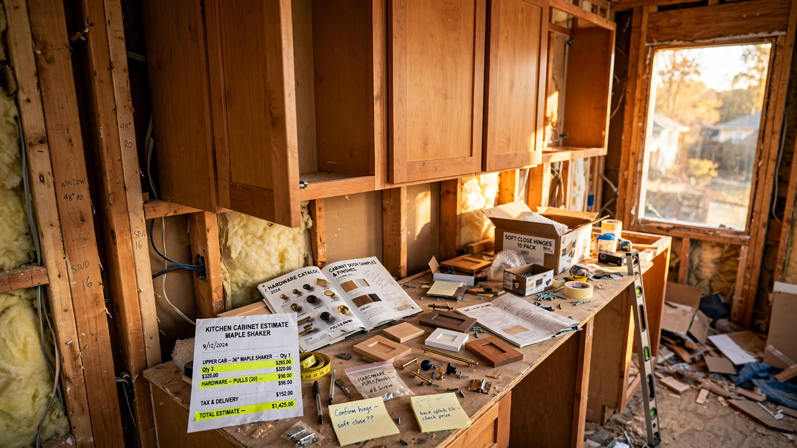

July 7, 2026 • By Frank DeLuca
You Signed a Fixed-Price Contract in March. The Cabinets Won't Ship Until January. Nobody Knows What They'll Cost.

I have been building houses for twenty-six years. Never once have I been unable to price a kitchen, not through lumber spikes, not through pandemic supply chaos, not through any of the material cost swings that every builder in this country has learned to absorb as the ordinary turbulence of the trade.
That changed in January.
The problem is not that cabinets got more expensive, because cabinets get more expensive every year and every builder on earth knows how to price that in. What changed is that cabinets got unpredictably expensive, on a timeline that changes quarterly, under a tariff regime that the federal government has revised three times in ten months and may revise again before your drywall is taped. I am writing this in July 2026, seven months into a 25 percent tariff on imported kitchen cabinets that was supposed to be a 50 percent tariff by now but got delayed to January 2027 in a last-minute proclamation that nobody in my office saw coming. Over the next six months we will learn whether that 50 percent rate kicks in, gets delayed again, or gets waived for specific countries that reach trade agreements with the United States. Nobody in Washington can tell me which outcome to expect, and nobody in my supply chain can either.
If you are a builder, a remodeler, or a homeowner who signed a contract this spring for a project that ships cabinets after October, you are holding a price that may no longer exist by the time the order is placed.
How a Kitchen Became a National Security Threat
On September 29, 2025, the Trump administration signed a proclamation imposing Section 232 tariffs on timber, lumber, and what the Commerce Department calls "derivative products." Section 232 of the Trade Expansion Act of 1962 allows the president to restrict imports that threaten national security. Congress wrote it for steel, uranium, and critical defense inputs, not for the thing that holds your cereal bowls.
Initial rates, effective October 14, 2025: 10 percent on softwood timber and lumber, 25 percent on upholstered wooden products, and 25 percent on kitchen cabinets and bathroom vanities. That same proclamation scheduled increases to 30 percent on upholstered products and 50 percent on cabinets and vanities starting January 1, 2026.
Then, on the last day of 2025, a second proclamation delayed those increases by exactly one year, citing "productive negotiations with trade partners." The 50 percent rate now targets January 1, 2027, unless countries reach bilateral agreements that exempt them. Currently, the rate remains 25 percent, stacked on top of existing duties. Canadian lumber, which accounts for 85 percent of all U.S. lumber imports according to the National Association of Home Builders, already carries anti-dumping and countervailing duties that the Commerce Department more than doubled from 14.5 percent to 35 percent. Add the Section 232 surcharge, and Canadian lumber faces a combined duty approaching 45 percent. Separately, IEEPA tariffs on imports from Mexico, Canada, and China layer additional costs onto gypsum, doors, windows, and framing components, though the constitutionality of IEEPA's application is pending before the Supreme Court.
Net effect: the Urban-Brookings Tax Policy Center calculates that current tariffs add roughly $30 billion annually to the cost of investment in residential structures. Ninety percent of that burden falls on new home construction, at an added cost of approximately $17,500 per home. CAP, the Center for American Progress, estimates the tariffs will result in 450,000 fewer homes built through 2030, equivalent to eliminating 6 percent of all housing units constructed between 2020 and 2024.
The Tier Problem
Not all kitchens are hit equally, and understanding where the tariff bites hardest requires knowing where the wood actually comes from.
In 2024, the United States consumed 401 million units of wooden kitchen furniture, according to IndexBox market data, with domestic production covering 312 million of those units and leaving a gap of 89 million that had to come from somewhere else. That somewhere else was overwhelmingly Asia: Vietnam alone accounted for $1 billion and 39 percent of import value, followed by Canada and Malaysia, with average import prices that have collapsed from $195 per unit in 2013 to just $30 per unit in 2024. That price compression is the foundation of the budget cabinet market, and it is exactly the segment the tariff targets.
I ran the numbers for three cabinet tiers on a standard 10-by-12 kitchen, using pre-tariff baseline pricing and adjusting for the import component share at each level:
Stock ready-to-assemble cabinets, baseline ~$3,000. These are overwhelmingly imported, primarily from Vietnam, China, and Malaysia. At the current 25 percent tariff, landed cost rises to approximately $3,750, and if the 50 percent rate kicks in January 2027, expect closer to $4,500, which means the builder's uncertainty spread on a single kitchen is $750 that nobody can pin down until the trade negotiators finish their work or don't.
Semi-custom cabinets, baseline ~$10,000. Mixed sourcing with boxes often domestic but hardware, drawer slides, specialty hinges, and certain finishes imported, putting the import component at roughly 40 percent of total cost. At 25 percent the kitchen runs about $11,000; at 50 percent, roughly $12,000, creating an uncertainty spread of $1,000 per kitchen that a fixed-price contract cannot absorb without a specific escalation clause.
Full custom domestic cabinets, baseline ~$20,000. Primarily domestic manufacturing, but even here the hardware supply chain is global: Blum hinges arrive from Austria, Hettich slides from Germany, specialty finishes and exotic veneers from everywhere else, putting the import component at roughly 15 percent and the uncertainty spread at about $750 per kitchen.
For a single custom home, these numbers are annoying but survivable, padding you can bury in a contingency line and forget about by framing. For a production builder pricing twenty homes with semi-custom kitchens, the aggregate uncertainty is $20,000 across the project. On a business operating at the NAHB-reported average net profit margin of 8 to 12 percent for single-family builders, $20,000 is not a rounding error. It is the difference between making money and not.
The Contract Problem
Fixed-price residential construction contracts work because material costs are predictable within a known band. Lumber might swing 10 percent season to season, concrete holds steady, and electrical wire fluctuates with copper, but builders bake a contingency into the bid, usually 3 to 5 percent, and absorb the normal variance because the variance is, in fact, normal.
A tariff that might double in six months is not normal variance, and no reasonable contingency covers a $750-to-$1,000-per-kitchen downside that was sized for a world in which tariff policy did not change every quarter.
Houzz staff economist Marine Sargsyan noted that "homeowners should expect tariffs to influence pricing but not as a sudden spike," predicting that "any increases are likely to be modest and gradual as existing inventory and contracts work through the system." She said that in November 2025, before the delay. In hindsight, the delay made her right about the timing and wrong about the predictability: the 50 percent rate didn't arrive on schedule, which means nobody can tell whether to price against it now or wait and hope.
PulteGroup, one of the nation's largest homebuilders, estimated during an October 2025 earnings call that tariffs could increase build costs by roughly $1,500 per home starting in 2026. Lennar CEO Stuart Miller acknowledged that "the cost structure in the industry is pushing higher and is difficult to manage." KB Home CEO Robert McGibney flagged "some pressure on material costs from lumber." These are companies with dedicated procurement teams and national supply agreements. A small GC pricing a kitchen remodel in Grand Rapids has none of those advantages and all of the same exposure.
What "Buy American" Actually Gets You
The intuitive response is to buy domestic cabinets and avoid the tariff entirely, which works on paper but collapses the moment you trace the actual supply chain.
American cabinet manufacturers produce 312 million units against a demand of 401 million, a 22 percent shortfall that would persist even if every domestic plant ran at maximum capacity. And domestic manufacturers are not insulated from tariffs, because they do not manufacture in a vacuum, a point that is easy to miss when the political rhetoric frames this as imports versus American jobs. As Sargsyan told The Kitchn, "domestic manufacturers often rely on imported components such as hardware, slides, and finishes." A cabinet box made in Iowa with German hinges, Austrian drawer slides, and imported plywood panels is not a fully domestic product. It is a domestic assembly of globally sourced components, several of which now carry their own tariff surcharges.
The 2025 U.S. Houzz Kitchen Trends Study found that 85 percent of kitchen projects include cabinet upgrades, and nearly 70 percent of those replace all cabinets. Cabinets are not optional in a kitchen renovation. You cannot substitute around them the way you can swap tile for LVP or choose a domestic light fixture over an imported one. They are the single largest line item in most kitchen budgets, and the supply chain that delivers them at competitive prices is irreversibly global.
What I'm Doing on My Projects
Three things, none of which are elegant.
First, I have stopped writing fixed-price kitchen allowances on contracts that extend past October 2026. Every kitchen specification now includes a tariff escalation clause that ties the cabinet line item to the landed cost at time of order, not time of contract. Clients do not love this, and I do not love explaining it, but I will not eat a $1,000-per-kitchen loss on a twenty-unit project because a trade negotiation stalled.
Second, I am pulling cabinet orders forward wherever possible. If the design is locked and the client has approved the selection, I order now at 25 percent and store on-site or at the distributor's warehouse. This ties up cash and creates a storage logistics problem, but it eliminates the pricing risk. For stock cabinets, where the tariff impact is proportionally largest, this is the single most effective hedge available to a small builder.
Third, I am having the conversation with every client before we sign. An era of quoting a kitchen to the dollar and holding that number for nine months is, for the moment, over. Clients who understand the tariff timeline (25 percent now, 50 percent maybe in January, subject to trade negotiations that have produced no public results) make better decisions about when to order and what to spec. Clients who don't understand it get angry when the change order arrives.
I would rather have the uncomfortable conversation in July than the expensive one in February.
What We Don't Know
This analysis carries real blind spots. That $30 billion aggregate cost figure from the Tax Policy Center assumes the full tariff regime, including the 50 percent rate. At the current 25 percent, the actual impact on residential investment is lower, though nobody has published a revised figure. IndexBox market data on import volumes and domestic production reflects 2024; post-tariff import patterns have almost certainly shifted, and 2025-2026 data is not yet available. I cannot verify whether production builders are absorbing tariff costs into margins, passing them through to buyers, or splitting the difference. My per-kitchen calculations above assume roughly 60 percent tariff passthrough to consumers, consistent with the Houzz economist's estimate, but actual passthrough rates depend on local competition and builder market power.
Fairly stated, the strongest argument against my concern is that the December delay itself signals a responsive administration, that Vietnam as the dominant import source has strong incentives to negotiate, that domestic production already covers 78 percent of consumption, and that 91 percent of homeowners say they are proceeding with 2026 projects regardless of tariffs, according to Houzz data.
All true. None of it helps me price a kitchen today for a house that closes in March.
On its face, the tariff on kitchen cabinets is a policy absurdity: a national security instrument applied to a consumer product that threatens nothing except the margins of builders who have to explain to a client why their $10,000 kitchen now costs $12,000, and might cost $15,000 by spring, depending on whether the Commerce Department reaches a deal with Vietnam before the new year. But absurdity does not reduce its impact on the 1.4 million housing starts the Census Bureau tracked in 2025, every one of which needs a kitchen, every one of which needs cabinets, and not a single one of which can be priced with confidence while a trade negotiation that has produced no public results determines whether the tariff will stay at 25 percent or jump to 50.
Twenty-six years of building houses, and I've never seen a material cost I couldn't estimate within 5 percent six months out. That streak ended in October 2025, with a tariff proclamation that classified my kitchen cabinets as a threat to the national defense.
I checked with the Pentagon. They did not request it.